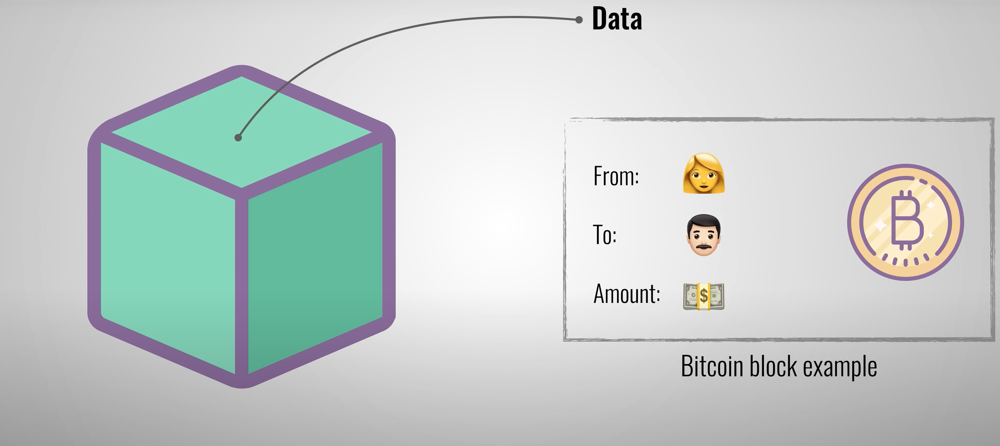

What is a Blockchain?
History of Blockchain
How it works

Uses
Cryptocurrencies
NFT
Pros and Cons of Blockchain
Pros of Blockchain
Improved accuracy by removing human involvement in verification
Cost reductions by eliminating third-party verification
Decentralization makes it harder to tamper with
Transactions are secure, private, and efficient
Transparent technology
Provides a banking alternative and a way to secure personal information for citizens of countries with unstable or underdeveloped governments
Cons of Blockchain
Significant technology cost associated with mining bitcoin
Low transactions per second
History of use in illicit activities, such as on the dark web
Regulation varies by jurisdiction and remains uncertain
Data storage limitations
Thank you for your attention!